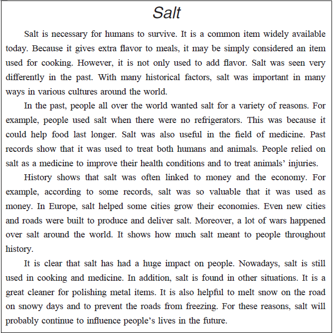

英語検定 準２級(2025年第2回No.4) 残り時間が0になると、自動的に採点します。 時間内に終了する場合は、一番下の「採点する」のボタンを押してください。 残り時間： 分 秒 2-4 英語検定(準２級) 筆記 2025年第2回(No.26～No.29) 各１０点 × ４問 ＝ ４０点満点 次の英文を読み、(26)から(29)の各質問に最も適切なものを、1～4 の中から一つ選びなさい。  問26 Question: What did people think about salt in the past? 答え： ( 26 ) (1) It was an item that was easily available anywhere. (2) It was one of the best discoveries in the cooking world. (3) It had other purposes than adding flavor to meals. (4) It had various tastes when it was cooked differently. 問27 Question: People in the past used salt as (1) or (2) or (3) or (4) 答え： ( 27 ) (1) an item to keep people from catching a cold. (2) a poison to kill dangerous animals. (3) a medicine to treat injured animals. (4) a product to wash people’s hair. 問28 Question: What is true about the impact of salt in the past? 答え： ( 28 ) (1) Salt was offered to end war everywhere around the world. (2) Money became useless because it was replaced with salt. (3) Roads were created by rich salt producers. (4) New cities and roads were built to make or carry salt. 問29 Question: How does salt help people’s lives today? 答え： ( 29 ) (1) It is used in beauty products to make people’s skin smooth. (2) It can be used as an item to clean things with. (3) It helps people stay warm on snowy days. (4) It helps to cool down people’s bodies when they are sick.

 英語検定 準２級(2025年第2回No.4)
英語検定 準２級(2025年第2回No.4)